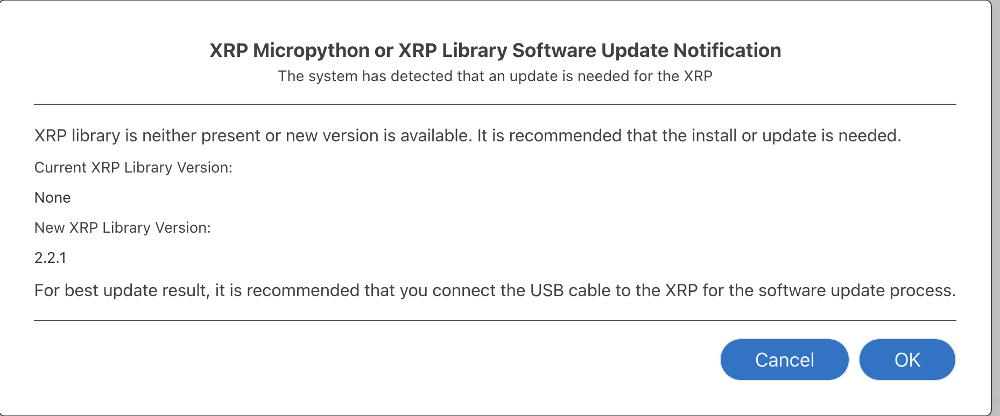
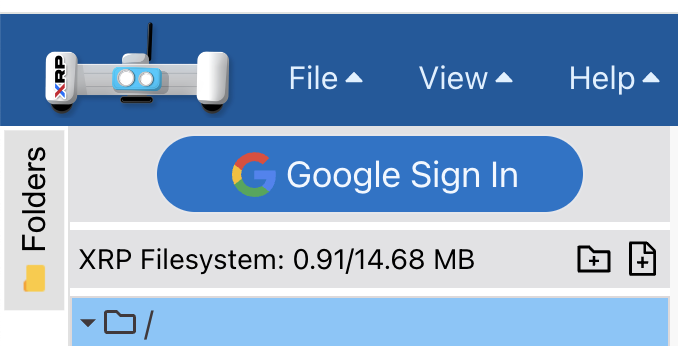
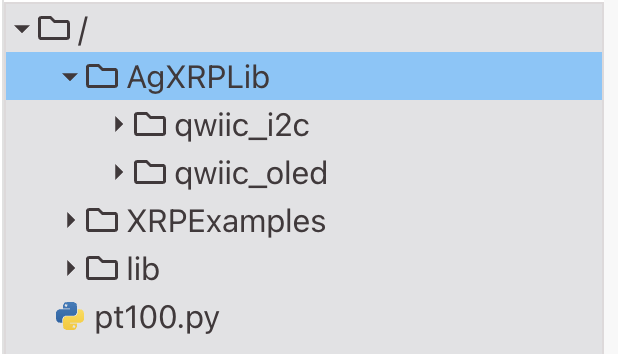
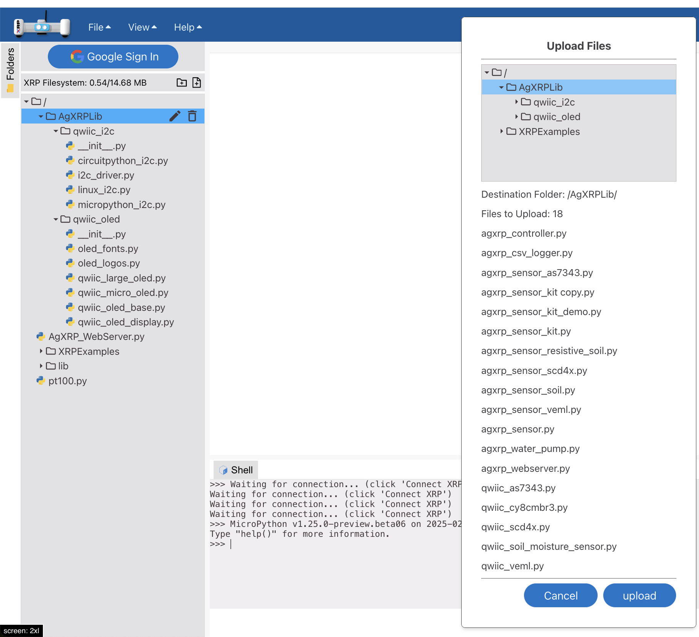
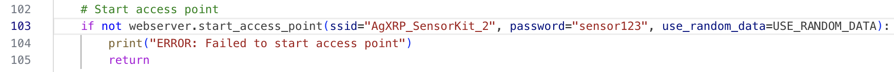
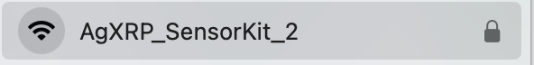
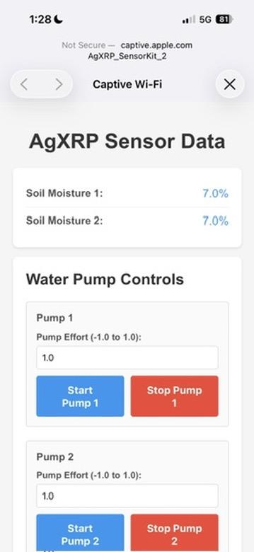
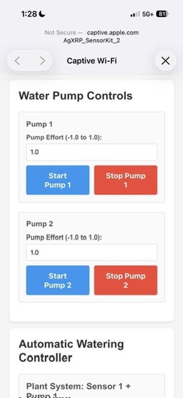
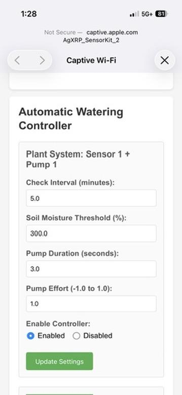

Tutorial 1 — Software Setup & Web Server Configuration
This tutorial walks you through wiring the AgXRP hardware, uploading the code to the board, and connecting to the web-based user interface. Complete the parts in order.
Part 1 — Hardware Wiring
Before connecting any wires, make sure the board is not connected to power or USB.
Step 1. Mount the XRP board into the CONTROL BOARD housing.
- Hold the spring mechanism open, then lower the board in, aligning its corners with the indent guides on the 3D-printed housing.
Image 1 — XRP control board placement into the housing mount
Step 2. Connect the pump wires.
- Connect a wire from the MotorR port to one pump.
- Connect a wire from the MotorL port to the other pump.
- Make sure the pins on the wire connector align with the holes in the port before pressing in.
Image 2 — Wire connections: MotorR and MotorL ports with pump wires attached
Step 3. Connect the moisture sensor wires.
- Connect a wire from the qwiic 0 port to the left input of one moisture sensor.
- Connect a wire from the qwiic 1 port to the left input of the other moisture sensor.
Image 3 — Wire connections: qwiic 0 and qwiic 1 ports with moisture sensor wires attached
Step 4. Connect the board to the power supply.
Step 5. Using a USB-C cable, connect the board to your computer.
- If a pop-up asks "Allow Accessory," select Yes.
 Image 4 — Power supply (blue) and USB-C cord (red) connections
Image 4 — Power supply (blue) and USB-C cord (red) connections
Part 2 — Uploading Code to the Board
Before you begin, make sure you have downloaded and unzipped the project files.
Step 1. Download and unzip the two_pump_setup folder from: _____________________
Author Note
The download link for two_pump_setup has been left blank intentionally. Fill in the URL or shared drive path before distributing this guide.
Step 2. Open XRPCode in your browser: https://xrp-code-d-u01.wpi.edu/
Step 3. Click CONNECT XRP in the top-right corner of the XRPCode website.
- Select CONNECT VIA USB.
- Click the XRP board that appears in the pop-up list.
Tip
If no board appears in the list, toggle the power switch on the board off and back on, then try again.
Image 5 — XRPCode interface showing the CONNECT XRP button and USB connection pop-up
Step 4. When prompted, click Confirm to update the code library.

Image 6 — UPDATE CODE LIBRARY confirmation dialogStep 5. Create the required folder structure in XRPCode.
- In the file panel, click the folder dropdown icon, then under the Google symbol select New Folder.
- Name the folder
AgXRPLib. - Inside
AgXRPLib, create two additional folders namedqwiic_i2candqwiic_oled.


Image 7 — Correct folder structure in XRPCode showing AgXRPLib with qwiic_i2c and qwiic_oled subfoldersStep 6. Upload the project files to XRPCode. Follow each sub-step in order.
- 6a. Go to File → Upload Files. Locate your
two_pump_setupfolder, selectAgXRP_WebServer.py, and press Open. In XRPCode, navigate to the root level and click Upload. - 6b. Go to File → Upload Files. Inside
two_pump_setup/lib/AgXRPLib/qwiic_i2c/, select all files and press Open. In XRPCode, navigate to theqwiic_i2cfolder and click Upload. - 6c. Go to File → Upload Files. Open the
qwiic_oledfolder, select all files, and press Open. In XRPCode, navigate to theqwiic_oledfolder and click Upload. - 6d. Go to File → Upload Files. Select all remaining files inside
two_pump_setup/lib/AgXRPLib/(excluding those insideqwiic_i2candqwiic_oled). In XRPCode, navigate to theAgXRPLibfolder and click Upload.

Image 8 — Uploading files to AgXRPLib folderStep 7. In XRPCode, drag the AgXRPLib folder into the lib folder.
Important
You cannot create the AgXRPLib folder directly inside the lib folder in XRPCode. You must create it at the top level first, then drag it in.
 Image 9 — Dragging AgXRPLib into the lib folder in XRPCode
Image 9 — Dragging AgXRPLib into the lib folder in XRPCode
Part 3 — Connecting to the Web Server
Once the files are uploaded, you can launch the AgXRP web server and connect to it from any phone or computer.
Launching the Web Server
Step 1. In XRPCode, double-click AgXRP_WebServer.py to open it.
- If you are using more than one AgXRP kit at the same time, each board must have a unique Wi-Fi network name.
- On line 103, change the
ssidvalue to a unique name (e.g.,AgXRP_SensorKit_2).
- On line 103, change the
- The default Wi-Fi password is also on line 103 (
sensor123). You may change it if desired.
Note
To add optional sensors (CO2, light intensity, OLED display) or a second watering pump, see Appendix i. Any code changes must be made before pressing RUN.

Image 10 — ssid Wi-Fi network name and password (line 103)Step 2. Click RUN in the top-right corner of XRPCode. Confirmation text should appear at the bottom of the screen indicating the server is running.
Image 11 — XRPCode RUN button
Step 3. On a phone, computer, or internet-connected device open Wi-Fi settings and connect to the network name you set in Step 1.
- The AgXRP user interface should open automatically in your browser.
Tip
If the interface does not open automatically, open a browser and go to: 192.168.4.1

Image 12 — AgXRP web interface as seen on a phone or computer browserWeb Server Interface Guide
The AgXRP web interface is divided into three main sections. Only the sensors and pumps you have connected will appear on the page.
1. Sensor Data
- Soil Moisture Sensor — Displays the current moisture level as a voltage percentage.
Author Note
CO2 and Light sensor descriptions are still blank in the source document. Please add units and expected value ranges for each sensor.
- CO2 Sensor — Displays carbon dioxide concentration. (Units and range: see author note above)
- Light Sensor — Displays ambient light level. (Units and range: see author note above)

Image 13 — Sensor Data section of the web interface2. Water Pump Controls
Use this section to manually operate the pumps.
- Pump Effort — Enter a value between -1.0 and 1.0 to control motor speed.
0.0= stopped |1.0= 100% forward speed- Negative values reverse the motor direction. Use this only if water is flowing the wrong way.
- Start Pump 1 — Click the blue button to begin pumping water.
- Stop Pump 1 — Click the red button to stop pumping water.

Image 14 — Water Pump Controls section of the web interface3. Automatic Watering Controller
Use this section to set up a hands-free, automated watering schedule. Each moisture sensor and pump pair functions as one Plant System.
| Setting | Description |
|---|---|
| Check Interval (minutes) | How often the system checks soil moisture before deciding whether to water. |
| Soil Moisture Threshold (%) | If the moisture reading falls below this value, the pump activates. Calibrate this using Tutorial 3. |
| Pump Duration (seconds) | How long the pump runs each time it is triggered. |
| Pump Effort (-1.0 to 1.0) | Controls motor speed during automatic watering. See Water Pump Controls for value explanations. |

Image 15 — Automatic Watering Controller section of the web interface4. Enabling/Disabling Automatic Watering
- Click Enabled to activate autonomous watering.
- Click Disabled to turn off autonomous watering.
- After changing any settings, always click Update Settings to save them.
Image 16 — Automatic Watering Controller section showing the Enable/Disable toggle and Update Settings button
Note
To determine which moisture sensor is Sensor 1 vs. Sensor 2, hold each sensor in your hand and watch which reading changes on the web interface. Similarly, click Start Pump to identify Pump 1 vs. Pump 2. If the sensor and pump numbers do not match your plant setup, see Appendix i for instructions on reassigning them in the code.